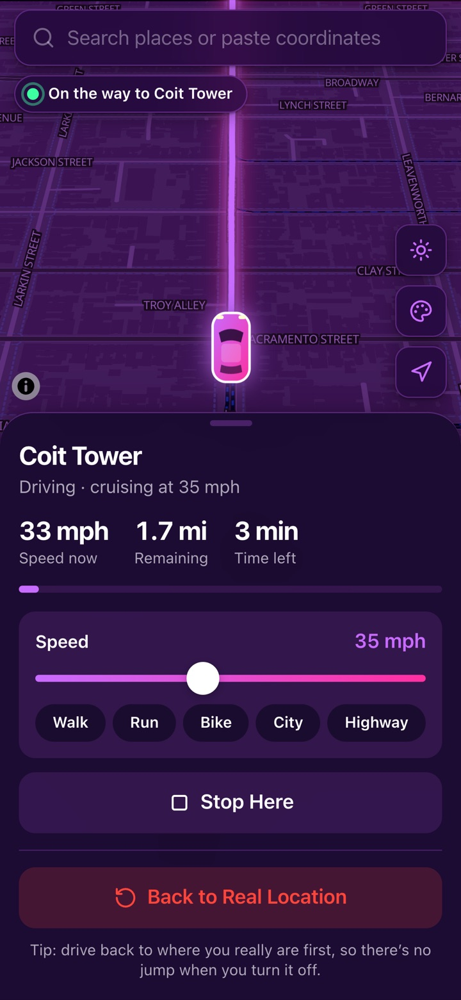
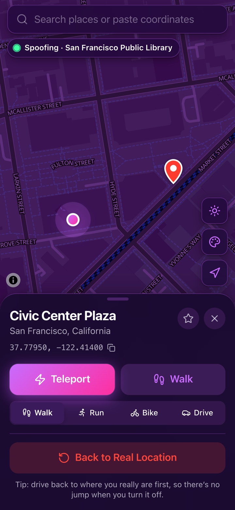
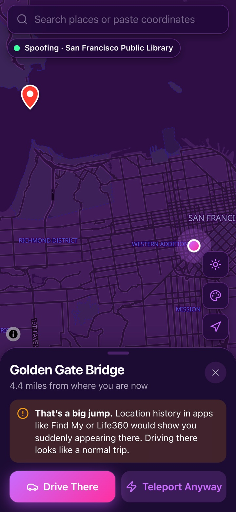
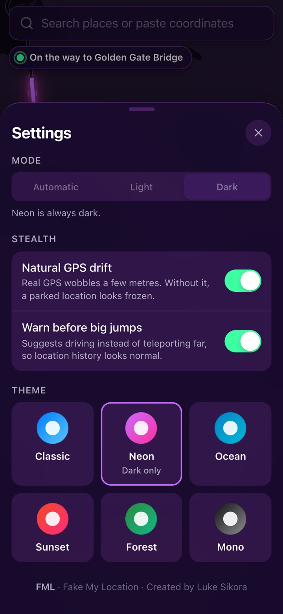
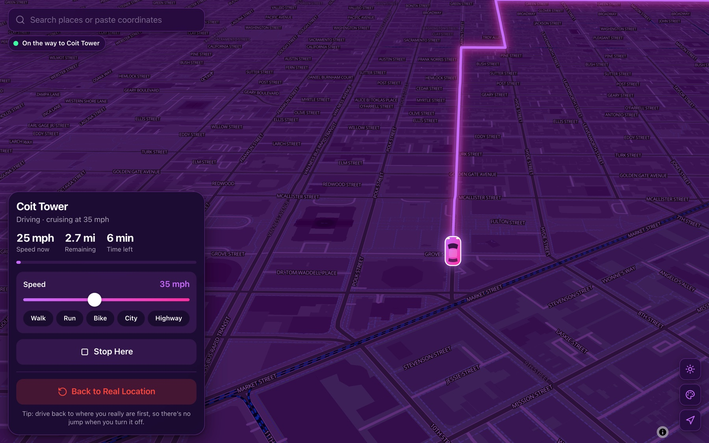

FML(Fake My Location)
Be somewhere else. Your location says otherwise.
Change your iPhone’s location from your Mac. Find My, family apps and everyone else see the spot you pick. Teleport there, or drive there along real roads.

For when you should be somewhere else.
Pick a spot. Tap one button.

Search anywhere, then teleport.
Type a place (typos are fine), paste a Google Maps link, or tap the map. Hit Teleport and your iPhone is there. Star the places you use a lot.
Or drive there like it’s real.
FML follows actual roads in a GPS-style view: the map tilts, the car turns with the street, and you can change your speed with a slider while you’re moving. Walk, run, bike or drive.

No suspicious jumps.
Appearing across town in one second is a giveaway in location history. When a teleport is far, FML warns you and offers to drive there instead.

Made to not look fake.
- Real driving. Speeds up gradually, slows for corners, rolls to a stop.
- GPS drift. When you’re “parked”, your dot wobbles a few feet like real GPS.
- Stays on. Keeps your Mac awake so your real location doesn’t pop back.
Runs on your Mac. Control it from either.
Use the map on your Mac, or scan a QR code and add FML to your iPhone’s Home Screen.

Ready? It takes 2 minutes.
Open Terminal, paste one line, plug in your iPhone. That’s it.
FML is open source. Every line of code is on GitHub for anyone to read.
Questions
Is it really free?
Yes. No account, no subscription, no ads.
Which apps see the fake location?
All of them. FML changes the location for the whole iPhone, so Find My, family location apps, Snapchat and Maps all see the spot you picked.
Will they be able to tell?
FML is built to look natural, but no tool can guarantee it. iOS tags developer-simulated locations and an app could check for that. Your real location also comes back if FML closes or your Mac sleeps.
Tip: before you turn FML off, drive back to where you really are so there’s no jump.
Does my Mac have to stay on?
Yes. Your iPhone keeps the fake location only while FML is running on your Mac and connected to the phone. Keep the lid open and the charger in.
Do I need to jailbreak or install Xcode?
No. You turn on Developer Mode in your iPhone settings once, and FML walks you through it.
Windows or Android?
Not right now. FML is Mac + iPhone only.
How do I uninstall it?
Close FML, then paste rm -rf ~/FML ~/Desktop/FML.command into Terminal.